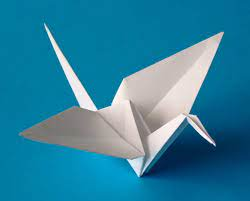
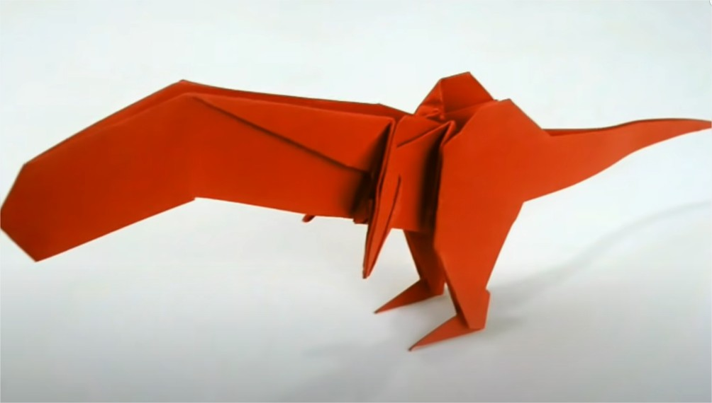

Tsuru
Fatos sobre o tsuru
- O tsuru é um origami muito conhecido.
- O tsuru representa bons desejos a quem os recebe.
- O tusru representa uma ave conhecida como grou-da-manchúria.
Dragão
Fatos sobre o dragão
- O dragão é um origami relativamente simples.
- O origami de dragão possui muitos jeitos de ser feito. Esse e um deles.
- A diversidade de dragões nos leva a ter dragões mais simples que outros.
Flor

Fatos sobre a flor
- A flor é um origami relativamente famoso.
- Existem diferentes maneiras de se fazer uma flor de origami, assim como o dragão.
- As flores de origami costumam ser simétricas, assim como muitos origamis.
T-Rex
Fatos sobre o T-Rex
- Os origamis de dinossauros mudam conforme a espécie de dinossauro.
- O origami de T-Rex possui vários jeitos de ser feito. Esse e um deles.
- Possui uma base muito semelhante ao dragão.